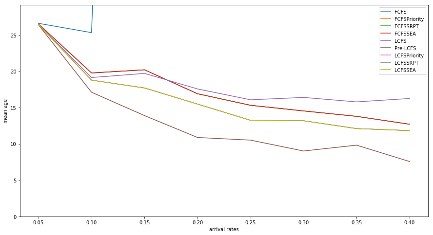
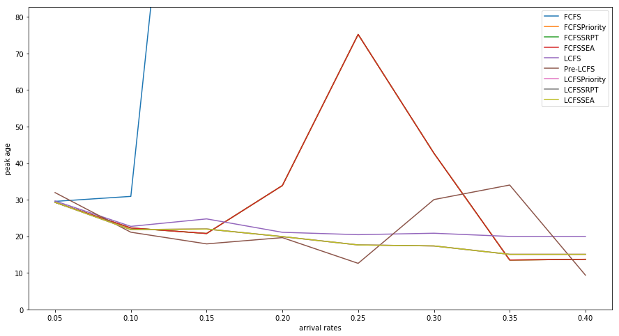
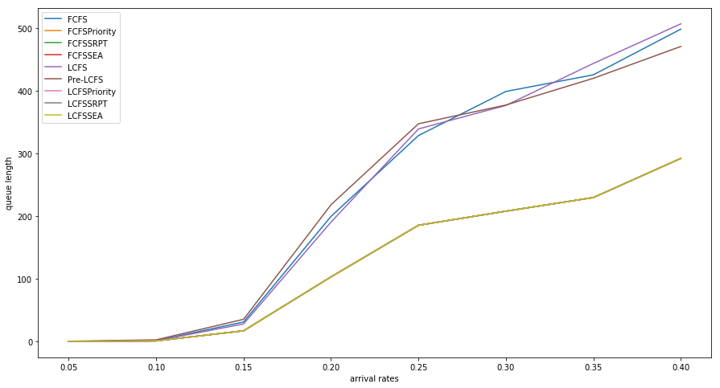
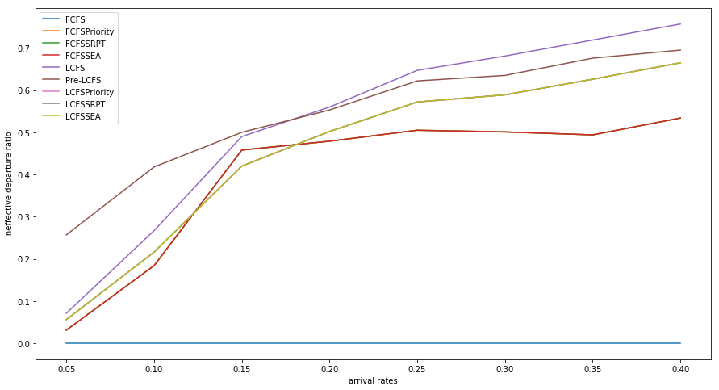

Python 3.6.4 |Anaconda custom (64-bit)| (default, Jan 16 2018, 10:22:32) [MSC v.1900 64 bit (AMD64)]
Type "copyright", "credits" or "license" for more information.
IPython 5.1.0 -- An enhanced Interactive Python.
? -> Introduction and overview of IPython's features.
%quickref -> Quick reference.
help -> Python's own help system.
object? -> Details about 'object', use 'object??' for extra details.
Restarting kernel...
Kernel died, restarting
In [1]:
In [1]: runfile('C:/Users/Liang_X1/Documents/Baiduyun/github/AgeQueueing/main.py', wdir='C:/Users/Liang_X1/Documents/Baiduyun/github/AgeQueueing')
Nuser=1000, arrival_rate=0.05, user_prob=[0.5, 0.5], mu =[0.8, 0.08], mode =FCFSPriority
age peak len ineff_dept
FCFS 26.599274 29.555787 0.118 0.000
FCFSPriority 26.500185 29.286863 0.106 0.031
FCFSSRPT 26.500185 29.286863 0.106 0.031
FCFSSEA 26.500185 29.286863 0.106 0.031
LCFS 26.446839 29.665480 0.126 0.071
Pre-LCFS 26.381607 31.954364 0.476 0.257
LCFSPriority 26.430612 29.297542 0.106 0.056
LCFSSRPT 26.430612 29.297542 0.106 0.056
LCFSSEA 26.430612 29.297542 0.106 0.056
C:\ProgramData\Anaconda3\lib\site-packages\tables\path.py:100: NaturalNameWarning: object name is not a valid Python identifier: '0.05'; it does not match the pattern ``^[a-zA-Z_][a-zA-Z0-9_]*$``; you will not be able to use natural naming to access this object; using ``getattr()`` will still work, though
NaturalNameWarning)
Nuser=1000, arrival_rate=0.1, user_prob=[0.5, 0.5], mu =[0.8, 0.08], mode =FCFSPriority
age peak len ineff_dept
FCFS 25.321233 30.919076 1.340 0.000
FCFSPriority 19.764029 22.287544 0.946 0.184
FCFSSRPT 19.764029 22.287544 0.946 0.184
FCFSSEA 19.764029 22.287544 0.946 0.184
LCFS 19.132089 22.718589 1.176 0.267
Pre-LCFS 17.107367 21.121059 2.658 0.418
LCFSPriority 18.776055 21.832445 0.946 0.216
LCFSSRPT 18.776055 21.832445 0.946 0.216
LCFSSEA 18.776055 21.832445 0.946 0.216
Nuser=1000, arrival_rate=0.15, user_prob=[0.5, 0.5], mu =[0.8, 0.08], mode =FCFSPriority
C:\ProgramData\Anaconda3\lib\site-packages\tables\path.py:100: NaturalNameWarning: object name is not a valid Python identifier: '0.1'; it does not match the pattern ``^[a-zA-Z_][a-zA-Z0-9_]*$``; you will not be able to use natural naming to access this object; using ``getattr()`` will still work, though
NaturalNameWarning)
age peak len ineff_dept
FCFS 212.881157 228.013016 31.174 0.000
FCFSPriority 20.197805 20.769462 17.110 0.458
FCFSSRPT 20.197805 20.769462 17.110 0.458
FCFSSEA 20.197805 20.769462 17.110 0.458
LCFS 19.701231 24.764385 28.040 0.490
Pre-LCFS 13.890160 17.929479 35.452 0.500
LCFSPriority 17.698257 21.992227 17.110 0.420
LCFSSRPT 17.698257 21.992227 17.110 0.420
LCFSSEA 17.698257 21.992227 17.110 0.420
Nuser=1000, arrival_rate=0.2, user_prob=[0.5, 0.5], mu =[0.8, 0.08], mode =FCFSPriority
C:\ProgramData\Anaconda3\lib\site-packages\tables\path.py:100: NaturalNameWarning: object name is not a valid Python identifier: '0.15'; it does not match the pattern ``^[a-zA-Z_][a-zA-Z0-9_]*$``; you will not be able to use natural naming to access this object; using ``getattr()`` will still work, though
NaturalNameWarning)
age peak len ineff_dept
FCFS 1060.889410 1300.182022 199.768 0.000
FCFSPriority 16.900596 33.888230 103.208 0.479
FCFSSRPT 16.900596 33.888230 103.208 0.479
FCFSSEA 16.900596 33.888230 103.208 0.479
LCFS 17.563550 21.095364 190.664 0.560
Pre-LCFS 10.874658 19.640263 218.370 0.553
LCFSPriority 15.476715 19.918568 103.208 0.502
LCFSSRPT 15.476715 19.918568 103.208 0.502
LCFSSEA 15.476715 19.918568 103.208 0.502
Nuser=1000, arrival_rate=0.25, user_prob=[0.5, 0.5], mu =[0.8, 0.08], mode =FCFSPriority
C:\ProgramData\Anaconda3\lib\site-packages\tables\path.py:100: NaturalNameWarning: object name is not a valid Python identifier: '0.2'; it does not match the pattern ``^[a-zA-Z_][a-zA-Z0-9_]*$``; you will not be able to use natural naming to access this object; using ``getattr()`` will still work, though
NaturalNameWarning)
age peak len ineff_dept
FCFS 1286.952052 2326.682896 328.832 0.000
FCFSPriority 15.310804 75.228242 185.574 0.505
FCFSSRPT 15.310804 75.228242 185.574 0.505
FCFSSEA 15.310804 75.228242 185.574 0.505
LCFS 16.067385 20.447123 339.406 0.647
Pre-LCFS 10.512525 12.605838 347.664 0.622
LCFSPriority 13.241546 17.645230 185.574 0.572
LCFSSRPT 13.241546 17.645230 185.574 0.572
LCFSSEA 13.241546 17.645230 185.574 0.572
Nuser=1000, arrival_rate=0.3, user_prob=[0.5, 0.5], mu =[0.8, 0.08], mode =FCFSPriority
C:\ProgramData\Anaconda3\lib\site-packages\tables\path.py:100: NaturalNameWarning: object name is not a valid Python identifier: '0.25'; it does not match the pattern ``^[a-zA-Z_][a-zA-Z0-9_]*$``; you will not be able to use natural naming to access this object; using ``getattr()`` will still work, though
NaturalNameWarning)
age peak len ineff_dept
FCFS 1423.341139 2606.742201 399.254 0.000
FCFSPriority 14.532661 42.729117 208.092 0.501
FCFSSRPT 14.532661 42.729117 208.092 0.501
FCFSSEA 14.532661 42.729117 208.092 0.501
LCFS 16.393629 20.843089 376.938 0.681
Pre-LCFS 9.010256 30.049349 377.590 0.635
LCFSPriority 13.181340 17.368124 208.092 0.589
LCFSSRPT 13.181340 17.368124 208.092 0.589
LCFSSEA 13.181340 17.368124 208.092 0.589
Nuser=1000, arrival_rate=0.35, user_prob=[0.5, 0.5], mu =[0.8, 0.08], mode =FCFSPriority
C:\ProgramData\Anaconda3\lib\site-packages\tables\path.py:100: NaturalNameWarning: object name is not a valid Python identifier: '0.3'; it does not match the pattern ``^[a-zA-Z_][a-zA-Z0-9_]*$``; you will not be able to use natural naming to access this object; using ``getattr()`` will still work, though
NaturalNameWarning)
age peak len ineff_dept
FCFS 1207.654153 2874.465153 425.798 0.000
FCFSPriority 13.787390 13.510789 229.856 0.494
FCFSSRPT 13.787390 13.510789 229.856 0.494
FCFSSEA 13.787390 13.510789 229.856 0.494
LCFS 15.778975 19.966960 444.016 0.719
Pre-LCFS 9.818364 34.025975 420.240 0.676
LCFSPriority 12.101812 15.072394 229.856 0.626
LCFSSRPT 12.101812 15.072394 229.856 0.626
LCFSSEA 12.101812 15.072394 229.856 0.626
Nuser=1000, arrival_rate=0.4, user_prob=[0.5, 0.5], mu =[0.8, 0.08], mode =FCFSPriority
C:\ProgramData\Anaconda3\lib\site-packages\tables\path.py:100: NaturalNameWarning: object name is not a valid Python identifier: '0.35'; it does not match the pattern ``^[a-zA-Z_][a-zA-Z0-9_]*$``; you will not be able to use natural naming to access this object; using ``getattr()`` will still work, though
NaturalNameWarning)
age peak len ineff_dept
FCFS 1222.304317 3655.828313 498.768 0.000
FCFSPriority 12.698886 13.717229 292.368 0.534
FCFSSRPT 12.698886 13.717229 292.368 0.534
FCFSSEA 12.698886 13.717229 292.368 0.534
LCFS 16.246476 19.964570 507.196 0.757
Pre-LCFS 7.564643 9.361194 471.074 0.695
LCFSPriority 11.823276 15.074321 292.368 0.665
LCFSSRPT 11.823276 15.074321 292.368 0.665
LCFSSEA 11.823276 15.074321 292.368 0.665
C:\ProgramData\Anaconda3\lib\site-packages\tables\path.py:100: NaturalNameWarning: object name is not a valid Python identifier: '0.4'; it does not match the pattern ``^[a-zA-Z_][a-zA-Z0-9_]*$``; you will not be able to use natural naming to access this object; using ``getattr()`` will still work, though
NaturalNameWarning)




time_cost:4.5534303188323975
In [2]: